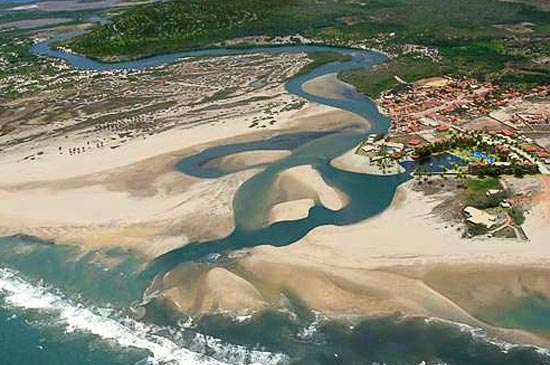
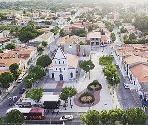

Informações técnicas sobre relevo, população, IDH etc.
| INFORMAÇÕES | |
|---|---|
| Municípios limítrofes | Cascavel, Aquiraz e Pacajus |
| Fundação | 1 de janeiro de 1989 (32 anos) |
| Clima | Tropical semiúmido (As) |
| IDH | 0,657 — médio |
| PIB | R$ 6,776 |
| INFORMAÇÕES TERRITÓRIAIS | |
|---|---|
| Número de habitantes | 20 567 habitantes |
| Superfície de Pindoretama |
7 296 hectares
72,96 km² (28,17 sq mi) |
| Densidade populacional | 281,9 ha./km² |
| Altitude de Pindoretama | 30 metros de altitude |
| Coordenadas geográficas decimais |
Latitude:
-4.02598
Longitude: -38.3067 |
| Coordenadas geográficas sexagesimais | Latitude: 4° 1' 34'' Sul , Longitude: 38° 18' 24'' Oeste |
| INFORMAÇÕES DO MUNICÍPIO | |
|---|---|
| Endereço da Prefeitura Municipal de Pindoretama |
Pindoretama
Prefeitura de Pindoretama
Rua Juvenal Gondim, 221 PINDORETAMA - CE, 62860-000 Brasil Work +55 85 3375-1094 Fax +55 85 3375-1003 |
| Telefone da prefeitura |
(85) 3375-1094
Internacional: +55 85 3375-1094 |
| Fax |
(85) 3375-1003
Internacional: +55 85 3375-1003 |
| Site oficial do município | pindoretama.ce.gov.br |
| INFORMAÇÕES DO ADMINISTRATIVAS | ||
|---|---|---|
| Prefeito de Pindoretama | JOSÉ MARIA MENDES LEITE | |
| Partido politico | PL | |
| INFORMAÇÕES DE TRANSPORTE | |
|---|---|
| Aeroporto |
Aeroporto Internacional Pinto Martins
37.5 km
Aeroporto Dix-Sept Rosado
167.5 km
Aeroporto de Sobral
228.8 km
|
| INFORMAÇÕES DE DISTÂNCIA A OUTRAS CIDADES | ||
|---|---|---|
| São Paulo : 2351 km | Rio de Janeiro : 2167 km | Brasília : 1680 km |
| Salvador : 996 km | Fortaleza : 43 km mais perto | Belo Horizonte : 1861 km |
| Manaus : 2415 km | Curitiba : 2655 km | Recife : 587 km |
| Goiânia : 1848 km | Belém : 1169 km | Porto Alegre : 3198 km |
| Guarulhos : 2329 km | Campinas : 2303 km | São Luís : 687 km |
| Distância calculada em linha reta! | ||
Conheça mais sobre a história da PINDORETAMA.
História
Chamou-se primitivamente Baixinha e Palmares. Suas origem ao século XIX, quando moradores, vindos de regiões
vizinhas, fizeram seu povoamento.
Formação Administrativa:
Distrito criado com a denominação de Baixinha, por ato de 08-11-1894, subordinado ao município de Cascavel.
Em divisão administrativa referente ao ano de 1911, o distrito de Baixinha figura no município de Cascavel.
Elevado à categoria de município com a denominação de Pindoretama, pela lei estadual nº 11413, de 28-12-1987,
desmembrado de Cascavel. Sede no antigo distrito de Pindoretama. Constituído do distrito sede. Instalado em
01-01-1989.
Pela lei estadual nº 2738, de 28-10-1929, o distrito de Baixinha passou a denominar-se Palmares.
Em divisão administrativa referente ao ano de 1933, o distrito de já denominado Palmares, figura no município
de Cascavel.
Assim permanecendo em divisões territoriais datadas de 31-XII-1936 e 31-XII1937.
Pelo decreto-lei estadual nº 1114, de 30-12-1943, o distrito de Palmares passou a denominar-se Pindoretama.
Em divisão territorial datada de 1-VII-1950, o distrito já denominado de Pindoretama, figura no município de
Cascavel.
Assim permanecendo em administrativa referente ao ano de 1-VII-1960.
Elevado à categoria de município com a denominação de Pindoretama, pela lei
estadual nº 6310, de 21-05-1963, desmembrado de Cascavel. Sede no antigo distrito de Pindoretama. Constituído
do distrito sede. Em divisão territorial datada de 31-XII-1963, o município é constituído do distrito. sede.
Pela lei estadual nº 8339, de 14-12-1965, é extinto o município de Pindoretama, sendo seu território anexado
ao município de Cascavel, como simples distrito. Em divisão territorial datada de 31-XII-1968, Pindoretama
toma é distrito de
Cascavel.
Assim permanecendo em divisão territorial datada de 1-VII-1983.
Elevado à categoria de município com a denominação de Pindoretama, pela lei estadual nº 11413, de 28-12-1987,
desmembrado de Cascavel. Sede no antigo distrito de Pindoretama. Constituído do distrito sede. Instalado em
01-01-1989.
Em divisão territorial datada de 17-I-1991, o município de Pindoretama é constituído do distrito sede.
Assim permanecendo em divisão territorial datada de 2005.
Fonte:
IBGE
Saiba mais sobre os melhores lugares e o que fazer em PINDORETAMA.
Praia de Águas Belas

Igreja Matriz

Fontes:
https://cearapraias.com.br/pindoretama-e-a-praia-de-aguas-belas/
https://pt.wikipedia.org/wiki/Pindoretama
Veja como chegar nos melhores pontos de PINDORETAMA